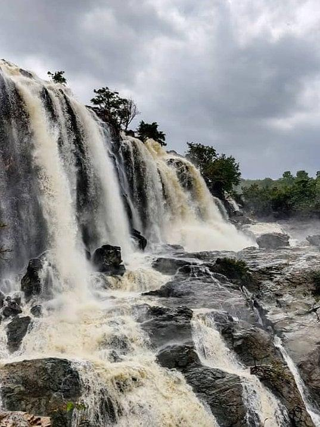
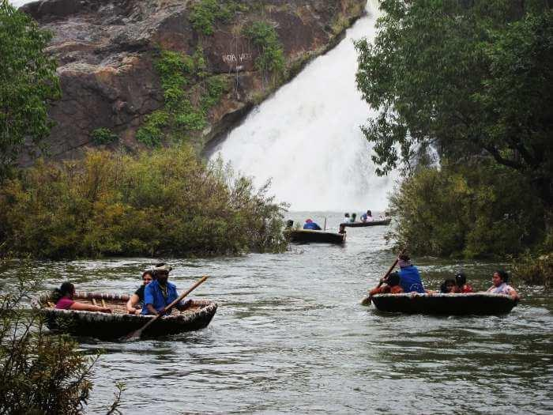
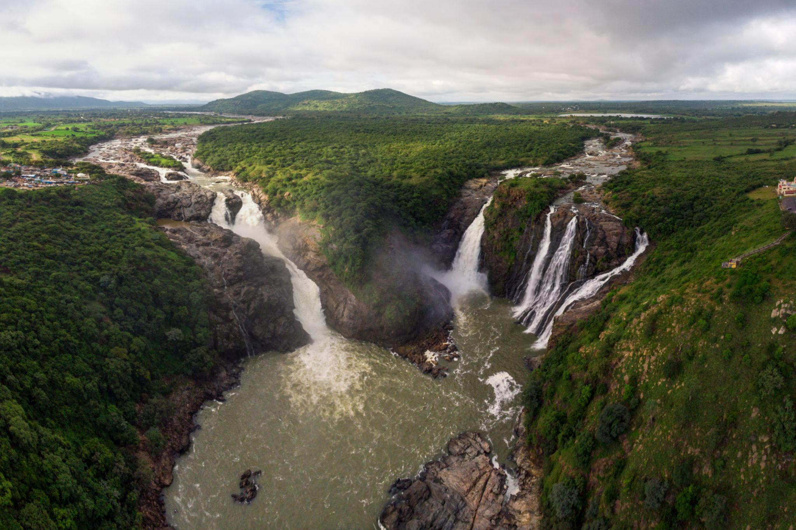

About
Barachukki Waterfalls is one of the twin waterfalls formed by the River Kaveri at Shivanasamudra in Kollegal Taluk, Chamarajanagar District. It is famous for its wide horseshoe-shaped cascade, scenic beauty and boating during suitable seasons. Together with Gaganachukki Falls, it is one of Karnataka's most visited natural attractions. :contentReference[oaicite:1]{index=1}
🌦️ Live Weather
Loading...
Loading...
📍 Location
Shivanasamudra, Kollegal Taluk, Chamarajanagar District, Karnataka
🕒 Visiting Timings
6:00 AM – 6:00 PM
🎫 Entry Fee
Free Entry
🚤 Boating
Available during suitable water levels (seasonal)
🌅 Best Time to Visit
July – January
Distance From Nearby Cities
| Place | Distance |
|---|---|
| Kollegal | 30 km |
| Chamarajanagar | 66 km |
| Mysuru | 75 km |
| Bengaluru | 135 km |
Things To Do
- 🌊 Enjoy the beautiful waterfall.
- 📸 Capture scenic photographs.
- 🚤 Experience coracle boating (seasonal).
- 🌿 Relax amidst nature.
- 🥾 Walk to the waterfall viewpoint.
Nearby Attractions
- Madhyaranga Temple
- Gaganachukki Waterfalls
- Shivanasamudra Hydroelectric Station
- Talakadu
Nearby Hotels
🏨 KSTDC Hotel Mayura Shivanasamudra
Distance: 2 km
⭐⭐⭐⭐☆
🏨 River View Resort
Distance: 3 km
⭐⭐⭐⭐☆
🏨 Cauvery View Lodge
Distance: 5 km
⭐⭐⭐☆☆
Nearby Restaurants
🍴 Mayura Restaurant
South Indian Meals
🍴 Shivanasamudra Family Restaurant
Veg & Non-Veg Available
🍴 Annapoorna Hotel
Breakfast, Lunch & Dinner
Visitor Tips
- ✔ Visit during the monsoon and post-monsoon season for the best waterfall view.
- ✔ Be careful near slippery rocks.
- ✔ Follow safety instructions near the water.
- ✔ Carry drinking water and wear comfortable footwear.
- ✔ Keep the surroundings clean and avoid plastic waste.
Gallery


